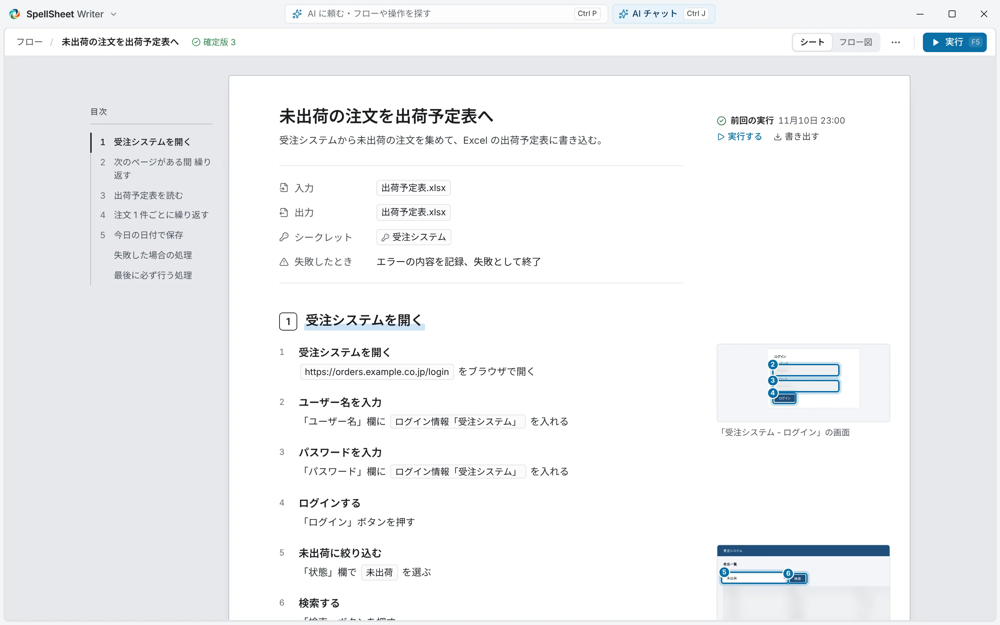
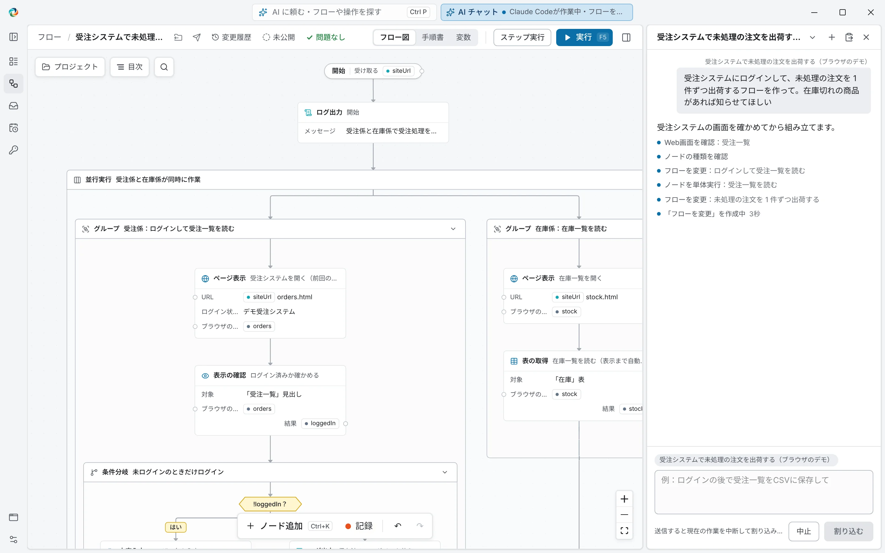
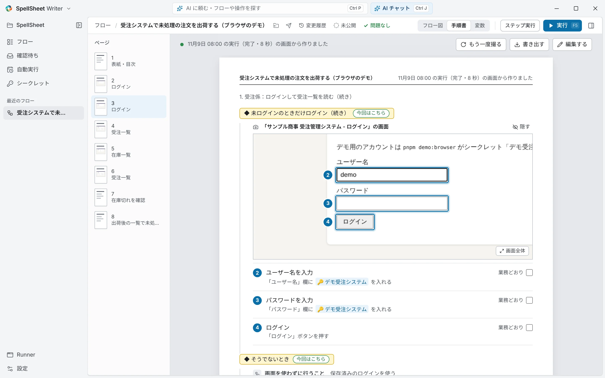

4 つの特長
どれか 1 つなら、ほかにもあります。SpellSheet は 4 つがそろっていることを大切にしています。
いつもの AI で作れる
Claude Code・Codex・Gemini CLI・GitHub Copilot・Cursor。会社ですでに使っている AI がそのまま使えます。
人が読んで直せる
フローは日本語の手順と画面の写真で読めます。AI の変更は、確かめてから使い始めます。
PC の中で無人実行まで
動かすときに AI もクラウドも使いません。スケジュールでの無人実行まで、社内の PC で完結します。
日本の業務アプリ向けで、無料
Excel・Web の基幹システム・Java の社内システム・手書きの OCR。本体は Apache-2.0 のオープンソースで無料です。
01 いつもの AI で作れる
頼むだけで、AI が画面を確かめながら組み立てます
「毎朝、受注メールの Excel を開いて、1 行ずつ販売管理システムに入力する」のように書いて送ると、AI が実際の画面を調べ、操作を試して、通った操作だけをフローに残します。組み上がっていく様子は、そのままフロー図で見えます。
AI は Writer の中から選んで導入とサインインができます。会社が許可している AI をそのまま使えるので、新しい AI サービスの契約や稟議は要りません。
- Claude Code
- OpenAI Codex
- Gemini CLI
- GitHub Copilot
- Cursor

02 人が読んで直せる
フローは、紙の手順書のように読めます
どのフローも、A4 の手順書として開けます。1 手順ずつ、日本語の説明と操作する直前の画面の写真が並びます。業務の担当者が「この順番で合っているか」を自分の目で確かめられます。
AI がフローを変えたときは、何がどう変わったかを 1 枚のレポートで確かめ、よければ「変更を承諾」します。承諾して確定した版だけが、ほかの人の実行や自動実行に使われます。
- 小さな直しは、その場で手で直せます
- ボタンや入力欄は「画面から選ぶ」でクリックして指定できます
- 手順書の画面写真は PC の中でぼかしを入れ、AI には渡しません

03 PC の中で無人実行まで
動かすときは、AI もクラウドも使いません
AI を使うのは作るときと直すときだけです。確定したフローは PC の中だけで動くので、毎日動かしても AI の料金は増えず、毎回同じ手順で動きます。
スケジュールやフォルダーにファイルが置かれたときに自動で動かせて、失敗したときなどは Teams や Slack に知らせます。ログイン情報は Windows の資格情報マネージャーに保管し、AI には名前しか渡しません。
実行の記録・画面の写真・ログイン情報は PC の中に残り、SpellSheet のサーバーへ送られることはありません（そもそもサーバーがありません）。
04 日本の業務アプリ向けで、無料
いつもの業務の画面とファイルを、そのまま扱えます
Excel のひな形への書き込み、Web の基幹システムへの入力、Java で作られた社内システム・古い Windows アプリの操作、手書きの帳票の読み取りまで、日本の事務の仕事に合わせて作っています。画面も説明も日本語です。
本体は Apache-2.0 のオープンソースで、無料で使えます。実行する PC の台数や同時に動かす数で料金はかかりません。SAP GUI など一部の連携は、有料のプラグインとして別に提供します（準備中）。
使い方
業務 1 本を、頼んでから毎月の実行までつなげる流れです。
頼む
Writer の「何を自動化しますか？」に、やりたいことをふだんの業務の言葉で書きます。AI が画面を確かめながらフローを組みます。
読んで試し、承諾する
フロー図や手順書で中身を読み、「ここから実行」で試します。違うところは AI に頼むか、その場で直します。よければ変更を承諾し、確定版にします。
毎日動かす
実行画面からボタン 1 つで、またはスケジュールで自動に。動かすだけの人には、入力欄だけの実行画面を渡せます。
Writer・Runner・Worker・Controller
作る人、使う人、無人の PC、まとめて見る人。それぞれに合った SpellSheet Writer・SpellSheet Runner・SpellSheet Worker・SpellSheet Controller があります。Writer・Runner・Worker は 1 つのインストーラーにまとめて入っています。
AI に頼んでフローを組み、フロー図や手順書で読んで直し、確定します。インストールしてデスクトップから開くのがこの画面です。
確定されたフローを選んで、ボタン 1 つで実行する画面です。見えるのは入力欄と結果だけなので、フローを作らない人にも渡せます。
画面を出さずに Windows の裏で待ち、スケジュールや依頼に合わせてフローを実行します。失敗したときなどは Teams や Slack に知らせます。
何台もの PC の Worker と実行の記録を、1 か所でまとめて見る組織向けの管理ツールです。準備中
よくある RPA 製品との違い
大きな組織での管理の仕組みや導入の実績では、ほかの製品が先を行っています。SpellSheet は、無料で始められること、いつもの AI で作れること、PC の中だけで動くことを大事にしています。
| SpellSheet | よくある RPA 製品 | |
|---|---|---|
| ソースコード | オープンソース（Apache-2.0） | 非公開 |
| ディスク | インストーラーは 200 MB 台（Node.js・ブラウザ操作・OCR のモデル込み） | 空きが 1〜3.4 GB 以上あることを動作要件にしている |
| サインイン | 不要。インターネットにつながっていなくても動く | クラウドのアカウントへのサインインと、インターネット接続が要るものがある |
| AI に頼んで作る | Claude Code・Codex・Gemini CLI・GitHub Copilot・Cursor から、日本語で頼める。AI が画面を調べながら組む | 製品に組み込まれた AI 機能で作る。地域・言語・プランが限られるものもある |
| MCP | MCP サーバーを同梱。フローを作る・試す・直す・実行するまで AI から使える | 管理サーバーを通して、できあがったものを AI から呼び出す形が多い |
| 業務アプリ | Excel・ブラウザ・Windows のアプリ・Java のアプリ。SAP GUI は有料のプラグインで対応（準備中） | Excel・ブラウザ・Windows のアプリ。SAP や Java のアプリに対応するものも多い |
1 年にかかる費用の目安
作る人が 1 人、無人で動かす PC が 1 台の場合のソフトウェアの費用です。PC・電気代・作る人の手間は含めていません。
| SpellSheet | よくある RPA 製品 | |
|---|---|---|
| 作る | 0 円 | 無料版や安いプランもあれば、作る用のライセンスが年 90 万円を超えるものもある |
| 無人で動かす | 0 円（Worker） | PC 1 台ごとに年額のライセンスが要ることが多く、1 台で年 25 万円前後の例もある |
| 管理サーバー | 不要。予定どおりの実行も失敗の知らせも PC の中で行う | 製品のクラウドか、自社で立てる管理サーバーを使う |
| AI | 作るときだけ、お使いの AI の契約で（例：Claude Pro は月 $20 で Claude Code も使える）。動かすときは 0 円 | 製品やプランによる |
「よくある RPA 製品」は、2026 年 11 月 9 日に主な RPA 製品の公開資料（料金表・動作要件・機能の説明）を見てまとめたものです。製品ごとの細かい違いや最新の価格は、各社の資料でお確かめください。Claude Pro の料金は Claude の料金ページによります。
いまは開発中の版（0.1 系）です。
機能はそろってきましたが、実際の業務での使用例はまだ多くありません。大事な業務で使う前に、テスト用のデータや環境で試してください。インストーラーにはまだコード署名がなく、初回は Windows の確認画面が出ます（手順はこちら）。不具合や要望は GitHub の Issues へお寄せください。
よくある質問
本当に無料ですか？
はい。本体（Writer・Runner・Worker、スケジュール、フローの受け渡し）は Apache-2.0 のオープンソースで、すべて無料です。一度無料で出した機能を、あとから有料にすることはしません。AI で作るときの AI の料金だけは、お使いの AI サービスの契約によります。
AI の契約は必要ですか？
AI に作ってもらうときは、Claude Code・Codex・Gemini CLI・GitHub Copilot・Cursor のどれかが使える契約が必要です。作ったフローを動かすだけなら、AI は要りません。MCP に対応していない AI チャット（Microsoft Copilot など）でも、仕様書を渡して答えを貼り付ける方法でフローを作れます。
業務の画面やデータは外に出ますか？
フローを動かすときは、すべて PC の中で完結し、外へは送りません。AI に作ってもらうときは、AI が画面の構造や内容を調べるため、その範囲はお使いの AI サービスに送られます。手順書の画面写真は AI に渡さず、ログイン情報は名前だけを AI に伝えます。個人情報を含む値は、実行の記録で伏せ字にできます。
会社の PC で使えますか？
ユーザーごとのインストールなので、管理者権限は要りません。ただし、ソフトウェアの導入に社内の決まりがある場合は、情報システム部門に相談してください。インストーラーにはまだコード署名がないため、社内の設定によっては実行が止められることがあります。
作ったフローをほかの人に渡せますか？
はい。フローを 1 つのファイル（.spx）にまとめて渡せます。課の共有フォルダーを「配布フォルダー」に登録しておくと、新しい版が置かれたことが受け取る人の画面に出ます。サーバーは要りません。
Mac や Linux で使えますか？
Windows 10・11（64 ビット）専用です。日本の事務の現場で使われている Windows の業務アプリを確実に動かすことを優先しています。